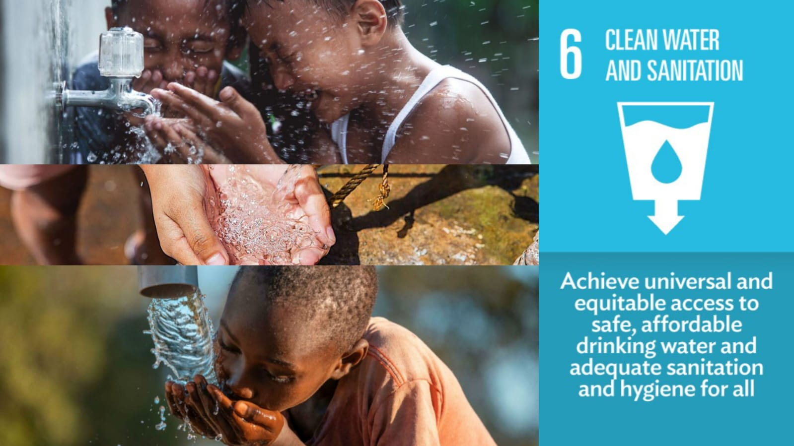

Hello all before we start lemme introduce my self. Hi! my name Alisha Reva Almaas im from X-G class and from team Clintertion. so on this occasion me and my team memilih salah satu topik dari SDGs yaitu SDG no.6 yang berjudul "clean water and sanitation" but before we start i want you guys to know what is SDG?
Sustainable Development Goals (SDGs), also known as the Global Goals, were adopted by the United Nations in 2015 as a universal call to action to end poverty, protect the planet, and ensure that by 2030 all people enjoy peace and prosperity. The 17 SDGs are integrated—they recognize that action in one area will affect outcomes in others, and that development must balance social, economic and environmental sustainability. Countries have committed to prioritize progress for those who're furthest behind. The SDGs are designed to end poverty, hunger, AIDS, and discrimination against women and girls. The creativity, knowhow, technology and financial resources from all of society is necessary to achieve the SDGs in every context.